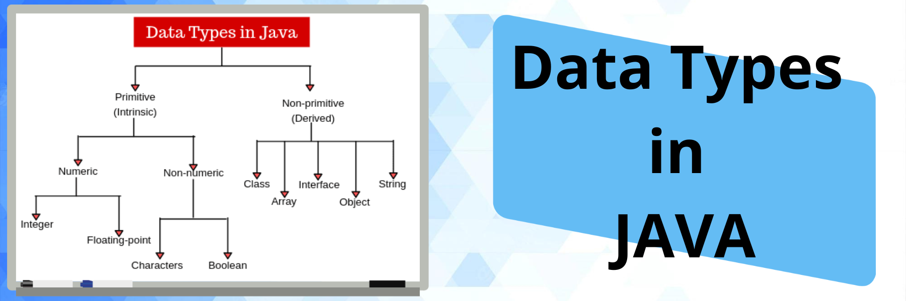

Data Types in JAVA
Data types are an essential building block of any programming language. In Java, data types define the type of data that can be stored in a variable.
Data types also tell us information about:
- The size of the memory location.
- The maximum and minimum value of range that can store in the memory location.
- Different types of operations can be done on the memory location.
Types of Programming Language
There are two types of programming languages based on the data types.
- Statically Typed Language
Statically typed languages are those languages in which the type of data values or expression that variable will hold is decided during the compilation time of the program is called statically typed language.
JAVA language is a statically typed language, which means the type of particular variable is defined during the compilation time. - Dynamically Typed Languages
As the name suggests, dynamic means that we can change the variable type after setting the particular type value to the particular variable. For example, the Python language is a dynamically typed language.
Python Code: a="VictoryPoint" #variable 'a' is initialized as a string a=3 #variable 'a' is assigned integer value
Primitive Data Types in Java
Java has eight primitive data types, which are:
- byte
- short
- int
- long
- float
- double
- char
- boolean
byte:
A byte is an 8-bit signed integer. It can store values between -128 and 127. It’s default value is 0. Here's an example of declaring a byte variable:
byte myByte = 42;
short:
A short is a 16-bit signed integer. It can store values between -32,768 and 32,767. It’s default value is 0. Here's an example of declaring a short variable:
short myShort = 32767;
int:
An int is a 32-bit signed integer. It can store values between -2^31 and 2^31 - 1. It’s default value is 0. Here's an example of declaring an int variable:
int myInt = 123456789;
long:
A long is a 64-bit signed integer. It can store values between -2^63 and 2^63 - 1. It’s default value is 0L. Here's an example of declaring a long variable:
long myLong = 1234567890123456789L;
float:
A float is a 32-bit floating-point number. It can store values with a range of approximately 3.4E-45 to 3.4E+38. It’s default value is 0.0f. Here's an example of declaring a float variable:
float myFloat = 3.14159F;
boolean:
A boolean is a data type that can store either true or false. It’s default value is false. Here's an example of declaring a boolean variable:
boolean myBoolean = true;
Non-Primitive Data Types
In addition to primitive data types, Java also has non-primitive data types, which are used to store more complex data structures like arrays and objects.
Here are some examples of non-primitive data types:
Arrays:
An array is a collection of elements of the same data type. Here's an example of declaring an array of integers:
int[] myArray = {1, 2, 3, 4, 5};
Strings:
A string is a sequence of characters. Here's an example of declaring a string variable:
String myString = "Hello, World!";
Type Casting in Java
Type casting is the process of converting one data type to another. In some cases, you may need to convert a variable from one type to another to perform a specific operation or to store it in a different data structure. In Java, there are two types of casting: widening and narrowing.
Widening Conversion
Widening conversion, also known as implicit casting, is when a variable of a smaller data type is assigned to a variable of a larger data type. Java automatically converts the value of the smaller data type to the larger data type. Widening conversion is safe because there is no loss of data.
Here's an example of widening conversion:
int myInt = 42;
double myDouble = myInt;
In this example, we're assigning the integer value 42 to a double variable myDouble. Since double is a larger data type than int, Java automatically converts myInt to a double value. The resulting value of myDouble is 42.0.
Narrowing Conversion
Narrowing conversion, also known as explicit casting, is when a variable of a larger data type is assigned to a variable of a smaller data type. Since the larger data type has more precision than the smaller data type, narrowing conversion can result in loss of data. To perform narrowing conversion, we need to explicitly cast the variable to the desired data type.
Here's an example of narrowing conversion:
double myDouble = 42.42;
int myInt = (int) myDouble;
In this example, we're casting the double value 42.42 to an int variable myInt. Since int is a smaller data type than double, we need to explicitly cast myDouble to int using (int). The resulting value of myInt is 42, and we've lost the decimal part of the original value.
In conclusion, data types are an important concept in programming, and understanding them is essential for writing efficient and effective code. Primitive data types and non-primitive data types both play a critical role in defining the types of values that a variable can hold, as well as the range of operations that can be performed on them. Type casting also plays an important role in converting values between different data types. By understanding the different data types available in Java and their limitations, you can ensure that your code is efficient, accurate, and easy to maintain.